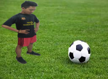

: @ramans_27
: rama.putra2763@gmail.com
: 0812456789
: smakbo104

"NO retreat NO surrender."
-Ramzzz.
Perkenalkan nama saya Ramadhan Anugrah Putra saya anak pertama dan tidak punya saudara kandung tetapi sanak saudara saya banyak.Saya lahir di Depok,21 November 2001,saya bertempat tinggal di Kp.Sidamukti No.27 Rt.02/11. Riwayat sekolah saya :
Saya memiliki tujuan hidup yaitu menjadi orang yang sukses dunia akhirat dan memiliki salah satu bidadari di dunia ini dan dapat membahagiakan orang tua saya ,keluarga saya dan juga orang di sekitar saya.. Pesan saya dalam menjalani hidup ini kita harus berani mengambil suatu keputusan walaupun itu berat dan jadilah orang yang mandiri karena kita tidak bisa selalamanya bergantung kepada orang lain ataupun orang tua kita :0.
Hobby saya ada banyak loh.... salah satunya bermain futsal, Menonton youtube, Bermain game online terutama Dota 2.Tidak tahu kenapa saya sangat menyukai game tersebut walaupun saya juga suka bermain banyak game tetapi game Dota ini sangat saya sukai karena dalam gamenya kita dapat bermain bersama teman teman, orang luar dan lainnya dan juga salah satu hal yang saya sukai dari game tersebut adalah game ini termasuk game MOBA action dimana didalam gamenya menurut saya terdapat pertarungan yang sangat seru dan apik karena dalam pertempurannya tersebut kita dapat mengadu strategi, melepas emosi dengan lepas dan melatih kerjasama tim menjadi apik dan dapat menyatukan pikiran beberapa orang menjadi 1 tujuan yaitu untuk menang.
Oh ya...dalam game Dota 2 ini saya memiliki favorit tim yaitu adalah tim Liquid karena menurut saya tim tersebut adalah tim yang sangat keren dan hebat dalam permainannya juga yang sangat apik.Tim ini beranggotakan : Matumbaman, Miracle~, Mind_Control, KuroKy dan gH.Menurut saya mereka adalah pro player yang sangat hebat dan saya berharap suatu saat nanti saya bisa melawan mereka semua terutama GH karena dia adalah player yang memiliki peran sama dengan saya yaitu support dan saya ingin sekali mengalahkan dia.
Dont forget to follow and add my social media ok !!!
: @ramans_27
: rama.putra2763@gmail.com
: 0812456789
: smakbo104
Copyright © @ramans_27
2018